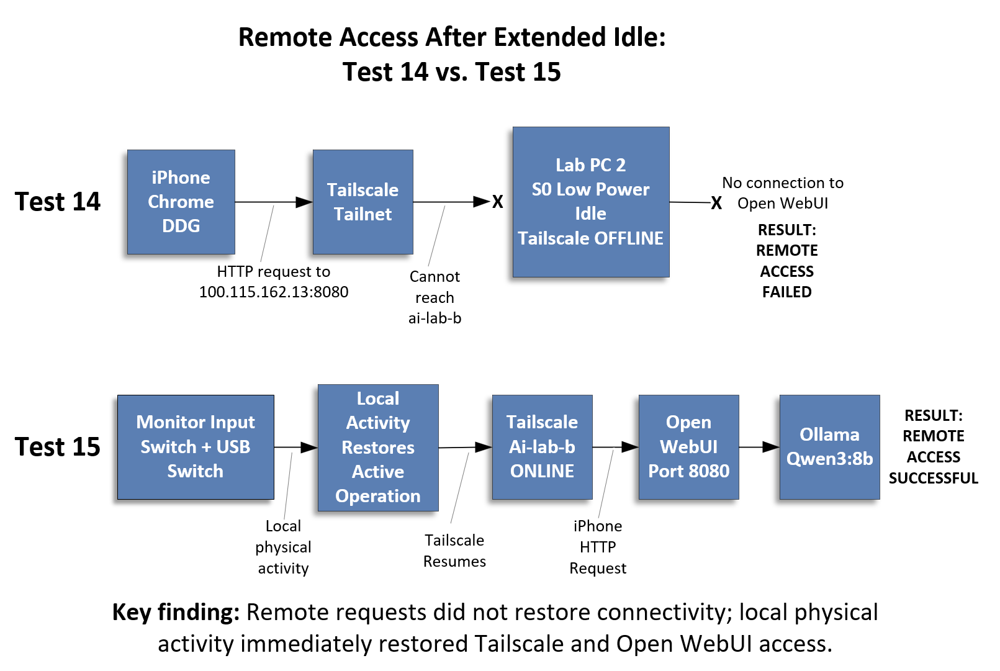

← Part 2: Mobile Access · AI Lab Portal Home
Part 2 proved that mobile access could work: an iPhone could reach Open WebUI on Lab PC 2 through Tailscale and run a local model. Part 3 asks a harder operational question: will that remote access still work after the AI server has been left unattended for hours?
Part 2 = making remote access work.
Part 3 = making remote access reliable.
The goal is not just a successful demo. The goal is an AI Lab node that behaves like infrastructure: reachable when needed, even when nobody has touched the keyboard, mouse, or monitor for a long time.
Allow approved devices on the Tailscale tailnet — especially the iPhone — to reach Open WebUI reliably after Lab PC 2 has been unattended for hours.
| Server | Lab PC 2 / Beelink SER9 |
|---|---|
| Tailscale node name | ai-lab-b |
| Tailscale IP | 100.115.162.13 |
| Open WebUI port | 8080 |
| iPhone node | iphone171 |
| iPhone Tailscale IP | 100.110.16.81 |
| Default model used for testing | qwen3:8b |
| Primary test URL | http://100.115.162.13:8080 |
Earlier tests included invalid HP-laptop attempts because that machine's Tailscale client was later found to be in NoState. The most useful data came from the iPhone and from local tests on Lab PC 2.
| Test | Client | Result |
|---|---|---|
| 9 | iPhone Chrome | Open WebUI loaded immediately; response completed in 63 seconds; model reported 23 seconds of thinking. |
| 10 | iPhone Chrome | Immediate repeat completed in 71 seconds; model reported 31 seconds of thinking. |
| 11 | iPhone Chrome | One-sentence prompt completed in 40 seconds; model reported 13 seconds of thinking. |
| 13 | Lab PC 2 Chrome | Localhost comparison completed in 44 seconds; model reported 24 seconds of thinking. |
| 14 | iPhone after roughly four hours idle | Failed. Open WebUI timed out and ai-lab-b appeared gray/offline in Tailscale. |
| 15 | iPhone after local wake activity | Success. Tailscale returned immediately, Open WebUI loaded immediately, and the prompt completed in 33 seconds. |
After about four hours without local activity on Lab PC 2, the iPhone could not reach Open WebUI at the numeric Tailscale address:
Both iPhone browsers tested timed out. The Tailscale app then showed ai-lab-b as gray/offline. That shifted the diagnosis away from Open WebUI itself: the failure was not merely that port 8080 was slow or that the browser was confused. The Beelink's Tailscale node itself had become unavailable.
To wake Lab PC 2, the monitor input and USB switch were moved from the HP laptop back to the Beelink. No restart was performed. Tailscale was not restarted. Open WebUI and Ollama were not restarted.
The result was immediate:
ai-lab-b changed from gray/offline to green/online in Tailscale.
The evidence strongly suggests that extended low-power idle behavior on Lab PC 2 makes the Tailscale node unreachable. Once the PC is locally awakened, the AI application stack appears to recover normally without restart or reconfiguration.
That does not yet prove the exact Windows power-state transition. It is more careful to say that local physical activity restored active operation than to say we have proven the machine left a specific sleep state.
Lab PC 2 did not show a traditional Sleep option in the Start menu. Windows confirmed why:
This means the Beelink uses Modern Standby / S0 Low Power Idle rather than classic S3 sleep. That matters because the lab is using this Windows mini-PC as a server, while S0 Low Power Idle is designed primarily for client-style power management.
After Test 15 restored remote access, the status script showed the application stack was healthy:
| Ollama | Running |
|---|---|
| Open WebUI desktop app | Running |
| Open WebUI server | Reachable locally at 127.0.0.1:8080 |
qwen3:8b | Loaded successfully during warm-up |
| Tailscale | ai-lab-b online; iphone171 online |
| Open Terminal / llama.cpp | Not reachable, but not part of the active Ollama/Open WebUI chat path |
This supports the conclusion that the four-hour failure was not an Open WebUI or Ollama crash. The application stack remained recoverable. The remote-access problem was tied to whether Lab PC 2 stayed reachable through Tailscale while idle.
Working hypothesis: Lab PC 2 is acting like a desktop client computer, not an always-on server. During extended S0 Low Power Idle, the machine appears to stop maintaining Tailscale availability. Local physical activity restores active operation immediately.
The desired behavior is different:
The next step is to generate a Windows SleepStudy report before changing any power settings:
That report should show when Lab PC 2 entered Modern Standby, how long it remained there, and which devices or services were active during the idle period.
powercfg /a revealed the Beelink only supports Modern Standby (S0 Low Power Idle), not classic S3 sleep — a client-oriented power model, not a server one.powercfg /sleepstudy report first, so the actual idle transition is documented rather than assumed.The long-term goal is to operate Lab PC 2 like infrastructure. The monitor can turn off, but the computer itself should remain reachable through Tailscale whenever Open WebUI is expected to be available.
← Part 2: Mobile Access · Part 4: Always-On Server → · AI Lab Portal Home